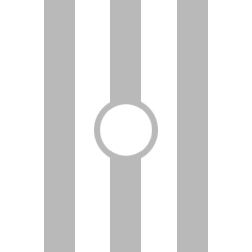

⚌ CENTRUM ⚌
WALL TWO OF INTERIUS
The center of your ways. You should begin to understand that the lives of those around you simply don't matter. They have no influence upon you. Keep within yourself your choices in life and leave them to theirs.
Here you must turn inward. It is not simple to ignore the chaotic noise of others around you. Every day, others will attempt to pull you into their lives. The media and our social circles will try to influence you for their own gains. You will be tempted to share opinions and feed the beast that hungers for conflict. So many have become so enamored with political idiocies and social gossip that is simply a cancer on our souls.
This is your true challenge in centrum. To turn within and let go of the coils of influence the world tries to keep you tied to. When you are grey, you become your soul's ability to shrug off anything that others will tell you is important. A true understanding that nothing really matters in life. That any one influence is a drop in an ocean of a lifetime.
When you can live within, and for yourself, without your subconscious manipulating you to feel persuaded by the world's plea to join it in its judgments of others, you have found your neutral center.
When others do not matter, nothing matters, and all is peace. You to yours and I to mine. The concept is simple and if you can become strong and live outside of the chaos to where others truly do not matter anymore. You have built your second wall.